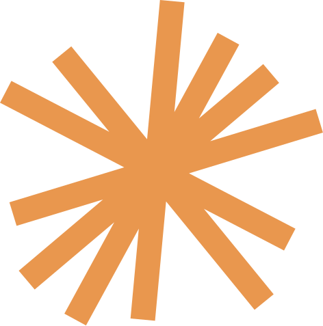

Um presente para vocêVocê esteve nos dois encontros de 2026 — o webinar Bem-vindos ao Ano das Convergências e a Masterclass Pós SXSW. E as nossas conversas nunca terminam quando a transmissão se encerra.
Por isso o curso que inaugura a minha nova plataforma chega até você sem custo nenhum.
Use o mesmo e-mail que recebeu o convite — é por ele que eu identifico você. E me conta, em duas linhas, o que ficou dos nossos encontros: é assim que eu fico sabendo quem entrou.